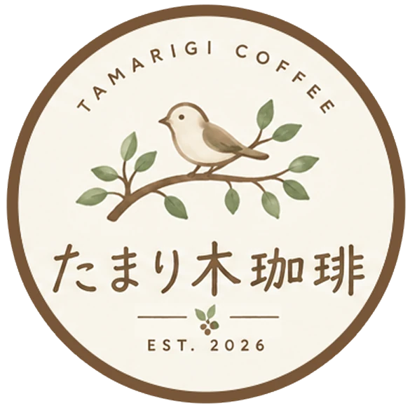
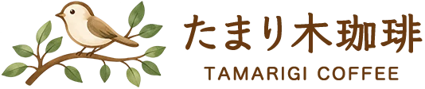
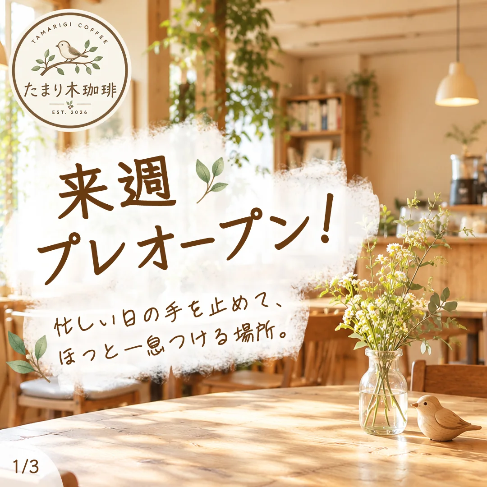
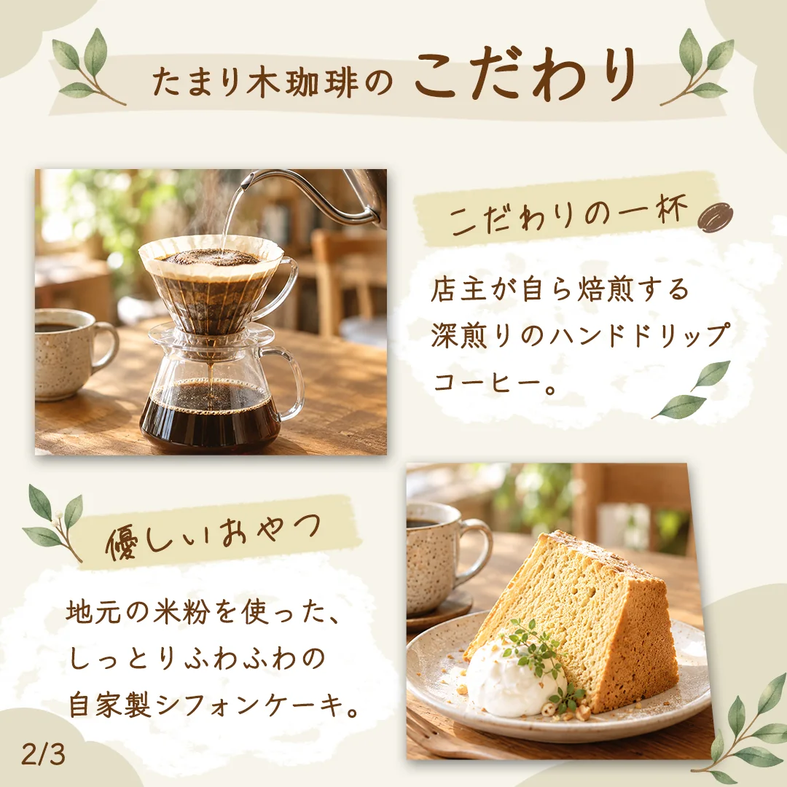
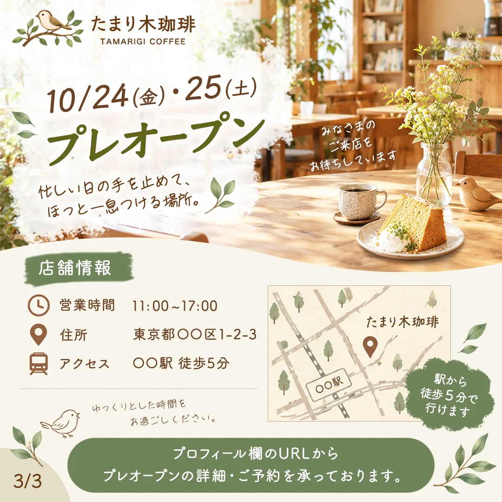
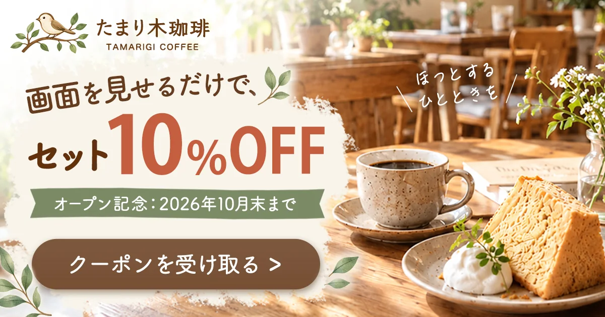
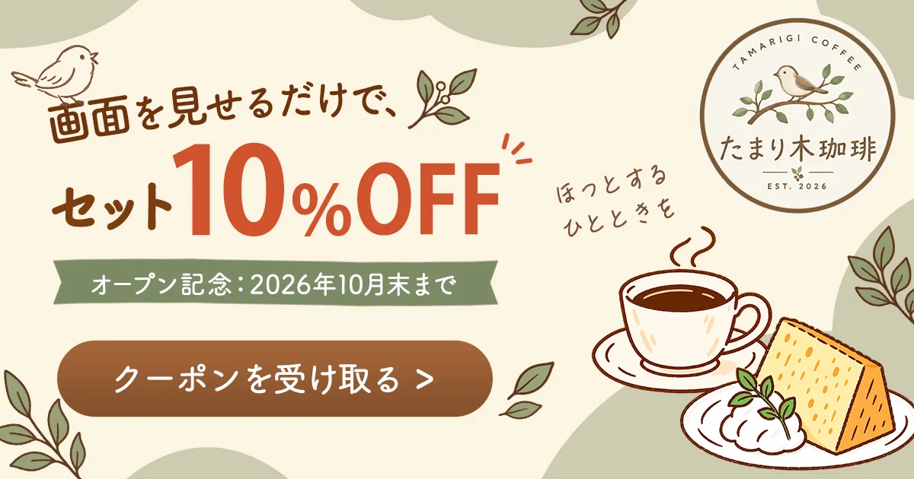
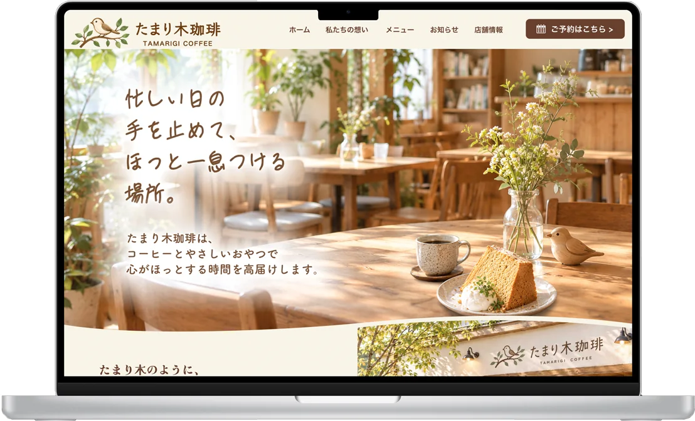
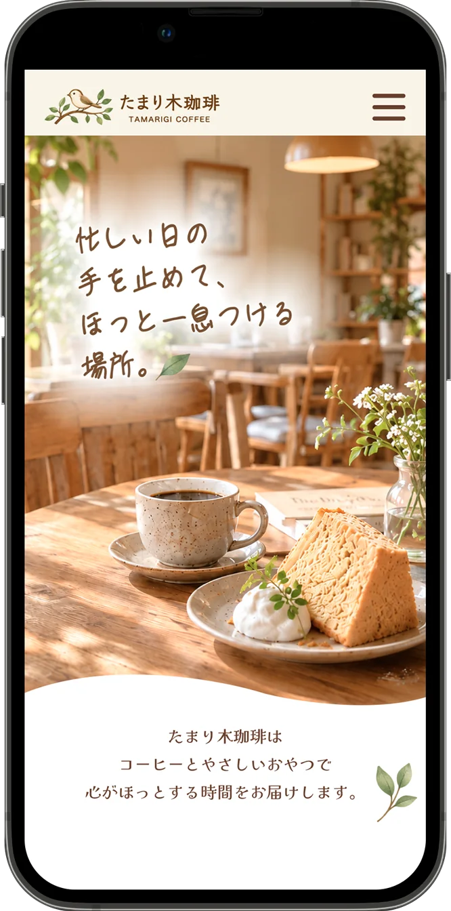

Logo店舗ロゴ
店名の「たまり木」から、鳥が木の枝で休んでいる、やさしいタッチのイラストにしました。文字は読みやすさを保ちつつ、手書き感のある温かいフォントを選んでいます。
SNSアイコンやショップカード、カップのシールに使う丸型のメインロゴに加え、Webサイトの細いヘッダーでも読める横長のセカンダリロゴを展開しました。
新規オープンするカフェの認知拡大と集客を目的に、ロゴからSNS、バナー、Webサイト（レスポンシブ）までをトータルでデザインしました。リサーチ・企画構成から制作まで一貫して担当しています。

忙しい日常の手を止めて、
ほっと一息つける場所。
派手な原色を避け、心が落ち着くアースカラーでまとめました。強調したい場面だけ、トーンを崩さないテラコッタを使っています。


店名の「たまり木」から、鳥が木の枝で休んでいる、やさしいタッチのイラストにしました。文字は読みやすさを保ちつつ、手書き感のある温かいフォントを選んでいます。
SNSアイコンやショップカード、カップのシールに使う丸型のメインロゴに加え、Webサイトの細いヘッダーでも読める横長のセカンダリロゴを展開しました。



プレオープンの告知用カルーセルです。1枚目で世界観を見せ、2枚目で商品のこだわりを伝え、3枚目で店舗情報からプロフィールのURLへ誘導する流れにしました。
1枚目は写真の上の文字が埋もれないよう、ちぎった紙のような白い背景を敷いています。3枚目はアイコンとテキストの位置を揃えて情報を整理し、簡易地図から予約案内へ視線が流れるように配置しました。


地域情報サイトからの来店を狙い、「画面を見せるだけで、セット10%OFF」という特典が一番目に入る設計にしました。
ロゴ、特典、期間、ボタンの順に、自然に視線が流れる配置にしています。「10%OFF」には、ナチュラルなトーンを壊さないテラコッタを使いました。ボタンは「押せる場所」だと直感的に分かるよう、背景から浮かせています。


ターゲットの利用環境を考え、SP版から設計するモバイルファーストで制作しました。
今回は、デザインの美しさに加えて、制作スピードと効率化にこだわりました。構成のアイデア出しや写真素材の用意にはAIツールを取り入れ、たくさんの生成結果からブランドに合うものを選び、PhotoshopとFigmaで編集・レイアウトする流れで進めました。
AIを使ってたたき台を素早く作る力と、トーンを整えて仕上げる編集力を活かし、実務でも変化に強いデザイナーとして貢献していきたいと考えています。